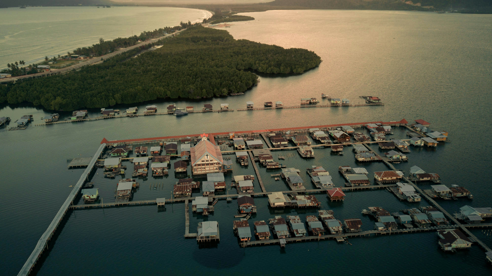
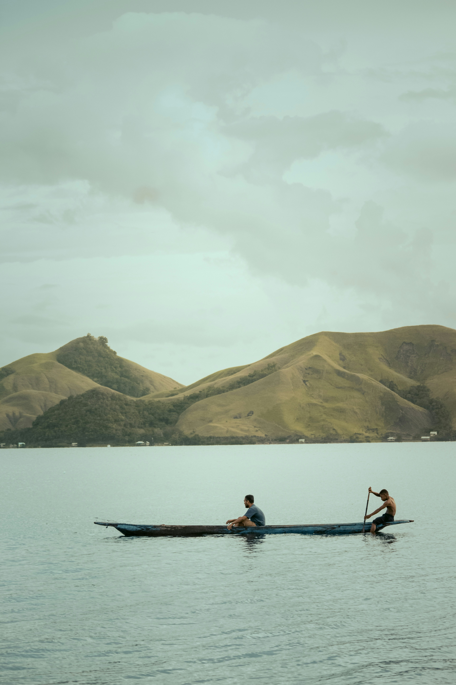

Wisata Alam Jayapura
Di Jayapura terdapat banyak sekali tempat wisata yang bisa di kunjungi untuk tempat refreshing bersama teman atau keluarga seperti di Danau sentani, bukit teletabis, pantai base-g, kali biru dan masih banyak lagi

